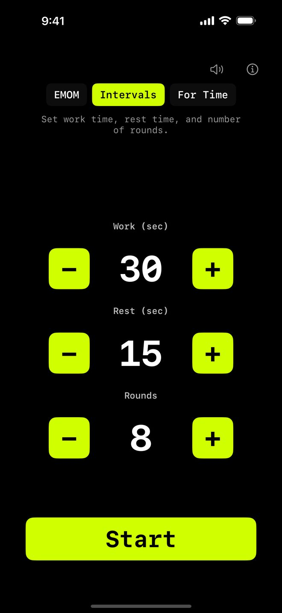

Work · Rest · Repeat
Interval Timer
för HIIT
Ställ in work (5–300 sekunder), rest (0–180 sekunder) och varv (1–60). Tryck Start. Ljud-cues och haptisk feedback talar om när du ska pusha och när du ska andas. Kör på iPhone, iPad, Apple Watch, Mac och Apple TV. Inget konto, ingen prenumeration, inga annonser.
Ladda ner i App Store iPhone · iPad · Apple Watch · Mac · Apple TV
Vad är intervallträning?
Intervallträning växlar mellan fasta perioder av arbete och vila. Till skillnad från EMOM där vilan är den tid du har över, ger intervals dig dedikerade work- och rest-faser.
Det gör formatet idealiskt för HIIT, Tabata, circuit training och konditionsarbete. Du styr intensiteten genom att justera förhållandet mellan work och rest samt antal varv.

Så fungerar intervals i WODrounds
-
Ställ in din work-tid
Välj hur många sekunder du arbetar varje varv. Från korta 10-sekunders bursts till långa 60-sekunders set.
-
Ställ in din rest-tid
Välj din vila mellan varv. Kort vila för intensitet, längre vila för styrkearbete.
-
Ställ in antal varv
Välj antal varv. 8 för Tabata. 12 för en snabb circuit. 20 för uthållighet.
-
Work / Rest cues
Tydliga ljud- och haptiska cues talar om när du ska börja arbeta och när du ska vila. Du behöver inte titta på skärmen.
Exempel på intervallpass
Snabb HIIT (11:45)
Intervals · Work 30s · Rest 15s · 16 varv
- Växla mellan 4 övningar:
- Mountain climbers
- Dumbbell thrusters
- Box jumps
- Rodd
Conditioning (9:40)
Intervals · Work 40s · Rest 20s · 10 varv
- Välj en övning per varv
- Fokus på att hålla intensiteten
- 2:1 work-to-rest ratio
Sprint Intervals (7:15)
Intervals · Work 15s · Rest 45s · 8 varv
- 15 sekunders all-out-insats
- 45 sekunders full återhämtning
- Assault bike, romaskin eller sprintlöpning
Starta ditt intervallpass
Finns för iPhone, iPad, Apple Watch, Mac och Apple TV.
Ladda ner WODrounds Inget konto behövs. Fungerar offline.Relaterat
-
EMOM Timer →
Every Minute on the Minute. Ställ in varv och varvlängd för CrossFit-style pacing.
-
Tabata Timer →
20 sekunders work, 10 sekunders rest, 8 varv. Det klassiska Tabata-protokollet i WODrounds.
-
Timer Guide →
Lär dig när du ska använda EMOM vs. intervals vs. Tabata och hur du ställer in varje format.